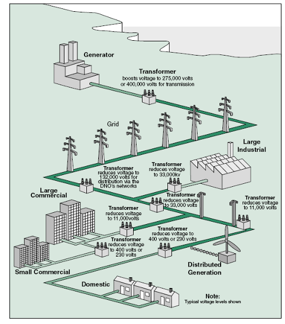
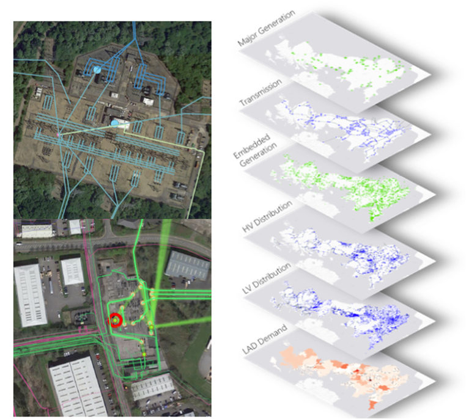
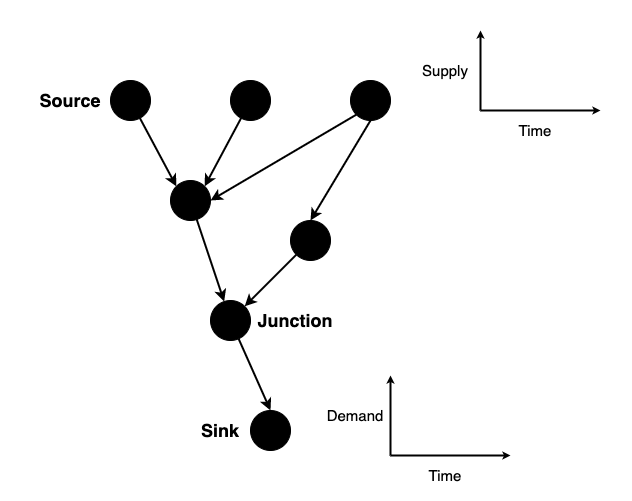
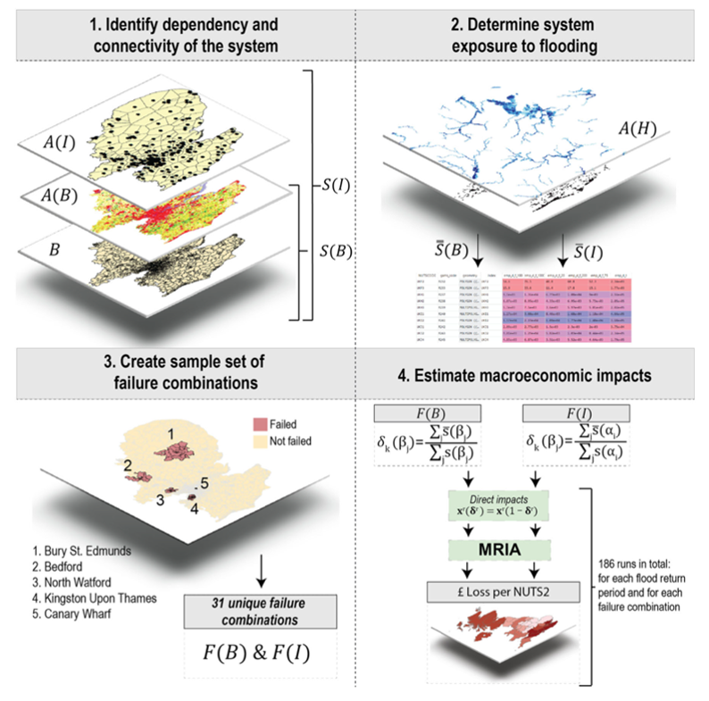

This lecture will cover how to model energy networks to analyse service delivery under climatic disruptions. We will cover the fundamentals of spatial and simulation modelling of energy systems, as well as understand how risks and impacts of climate hazards can be quantified through such models.

Figure 9.4.1: Schematic illustration of an energy system (DECC 2010).
Let’s first understand the process of electricity generation, transmission, and supply, which is represented by the schematic in Figure 9.4.1. Electricity is generated from a variety of fuel sources. While renewable energies (e.g. wind and solar) are growing across the world, thermal power generation (e.g. coal, nuclear, and gas) remains the most common supply source. Electricity is generated at around 22,000 volts and this must be boosted by transformers to at least 275,000 volts (275 kV) before entering the transmission grid, from where it is distributed regionally. We increase the voltage as this reduces the amount of current flowing through the network and hence reduces heat losses. However, there are still losses incurred in the high voltage network.
Electricity is then drawn from the high voltage network and reduced to around 132 kV. Large-scale users of electricity are supplied electricity through reduction to 33 kV. Meanwhile, domestic, small-scale consumers’ voltage must be reduced to around 230-400 volts.
The process of continuously matching supply to demand is highly complex. This is managed and operated by a national-level grid utility. As we’ve seen with other infrastructure systems, electricity networks are vulnerable to climatic influences (e.g. temperature shifts), as well as climatic hazards (e.g. flooding). Further, given that other infrastructure systems are inherently dependent upon energy (e.g. water, transport, digital telecoms), the risk of cascading failures is important to understand.

Figure 9.4.2: An illustration of a spatial energy system model from the United Kingdom (Russell et al. 2020).
The first step in modelling energy networks usually entails creating a spatial representation of the system. At this stage, we map critical assets within the network as nodes, as well as the connections between nodes as edges. This leads to the creation of a spatial representation of the network topology. Figure 9.4.2 shows an example of an energy network created in the United Kingdom (Russell et al. 2020). The amount of spatial detail you wish to capture is dependent upon your purpose. For large analyses, such as at a national or global level, an analyst may wish to map the major generation sites and the high voltage transmission lines. Meanwhile, for regional scale analyses, this level of detail may not suffice, and hence the analyst may seek to capture embedded generation sites, as well as the low voltage distribution networks. We can create network models using Geographical Information Systems (GIS) software. Though there are numerous tools available to us for this purpose, a commonly used software is QGIS (Graser 2013), which is freely available and has a wide array of documentation. The use of QGIS for infrastructure research is common.

Figure 9.4.3: Schematic of a directed graph (network) model with temporal dimensions
Once we have mapped the spatial network topology, we must then represent the temporal characteristics of the system we wish to model. For this purpose, we must first categorise each node within the network as one of the following: source, sink, or junction. A source node is one that supplies electricity and hence does not have a demand (e.g. natural gas power plant, solar farm). On the other hand, a sink is one that has no supply but has a demand of electricity (e.g. group of households, cement production plant, water treatment facility). Meanwhile, a junction has neither supply nor demand but instead serves as a node to aggregate, transform, or split flows (e.g. transformer).
Sources and sinks in the network are assigned time series data (Figure 9.4.3). These data capture the relevant supply and demand curves of the system, as well as the temporal aspects of the system. For example, a time series associated with a solar farm source node can detail the temporal variability in its energy output under varying solar irradiances and temperature profiles. Meanwhile, demand data for a group of households can capture the hourly and seasonal features of energy demand in the specific region.
Collating temporal information related to an energy network can be a data-intensive exercise. Typically, it requires the use of stochastic models to describe the random variables in the system (e.g. wind energy output). Stochastic processes are variables whose values change through time according to probabilistic laws (e.g. wind speed).
After we’ve set up an energy network model, we are then ready to begin the process of simulation. Simulation models are a digital representation of a real-world system, which allow us to explore ‘what-if’ scenarios. In the context of energy networks, such models enable us to simulate the effects of building new infrastructure and policy interventions, as well as understand the impacts of potential climatic hazards. For example, simulation models could facilitate us to answer the following questions:
Simulation models of energy systems can vary depending on the level of complexity the analyst wishes to capture. However, there are two common approaches: (1) high-level energy balance models, and (2) AC/DC optimal power flow models.
The former is a simplistic approach in which energy balances across the network are resolved dynamically. Meanwhile, the latter is a more sophisticated method that can capture AC and DC power flows, as well as short-circuit calculations (Thurner et al. 2018). For large system-scale analyses of power networks, the former approach is normally preferred to ensure model tractability and computational efficiency.
At this stage, we are ready to simulate and understand the effects of climatic hazards on a given energy network. To date, studies have analysed impacts from earthquakes, hydrometeorological processes (e.g. floods and windstorms), as well as space weather phenomena. A commonly used approach is to overlay mapped climate hazard data onto the geospatial network and to stress-test nodes and arcs that fall within the most hazardous zones (see Figure 9.4.4) (Koks et al. 2019). In this approach, the failure sampling is governed by the hazards tested for.

Figure 9.4.4: Methodological setup to quantify climate risks across an energy system (Koks et al. 2019)
By simulating disruptions in the function of the most vulnerable assets within the network, we can quantify the following types of information:
The redundancy in the network. In other words, can adequate levels of supply be maintained by rerouting supply?
The relationship between number of customers affected and the number of assets exposed.
The spatial exposure of the network. In other words, which parts of the system are the most vulnerable?
The resilience of the system. That is, how long does it take for the system to restore a normal level of service?
This lecture has introduced the basic functions of energy systems and how these networks are modelled. We have shown how spatial representations of energy networks are constructed, as well as how dynamic simulations are conducted. We also covered how the influence of climatic hazards on energy networks can be simulated.